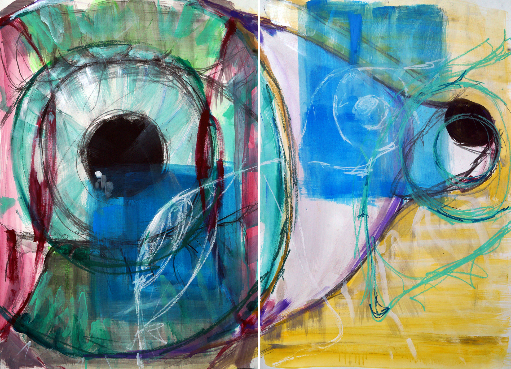
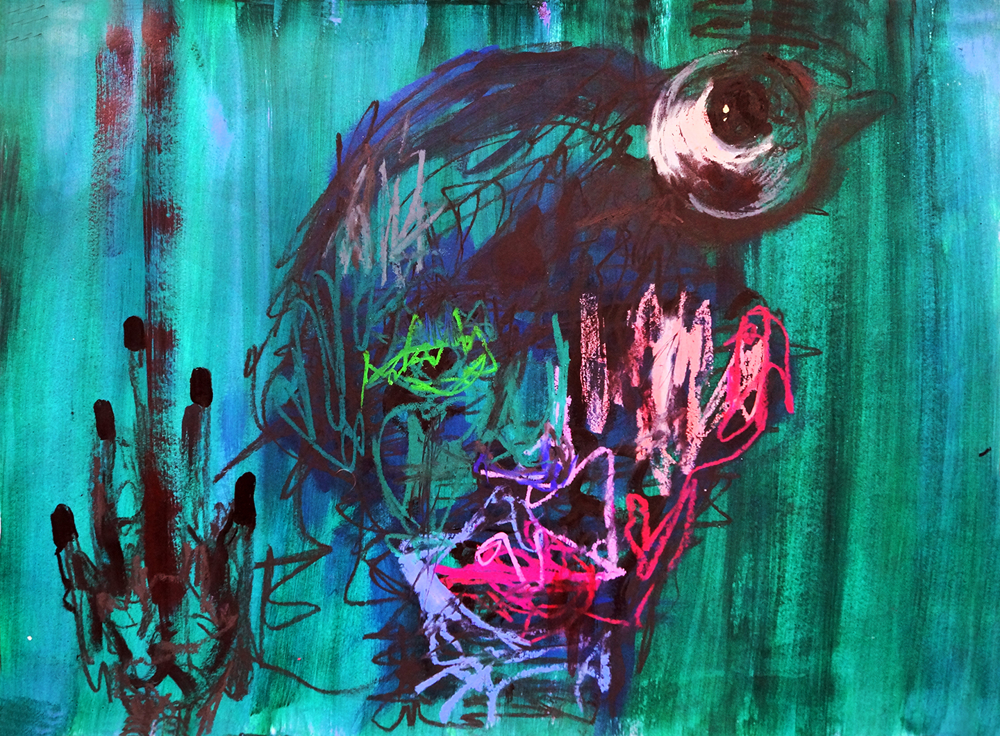
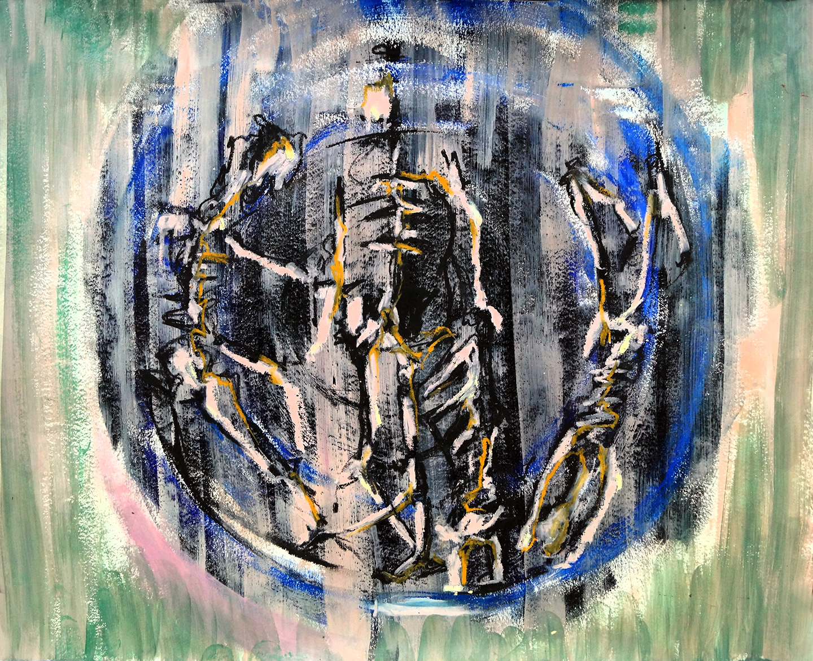
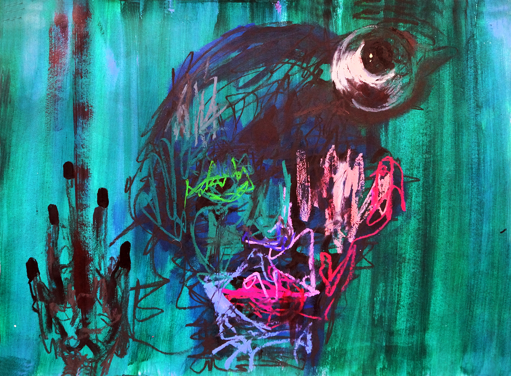
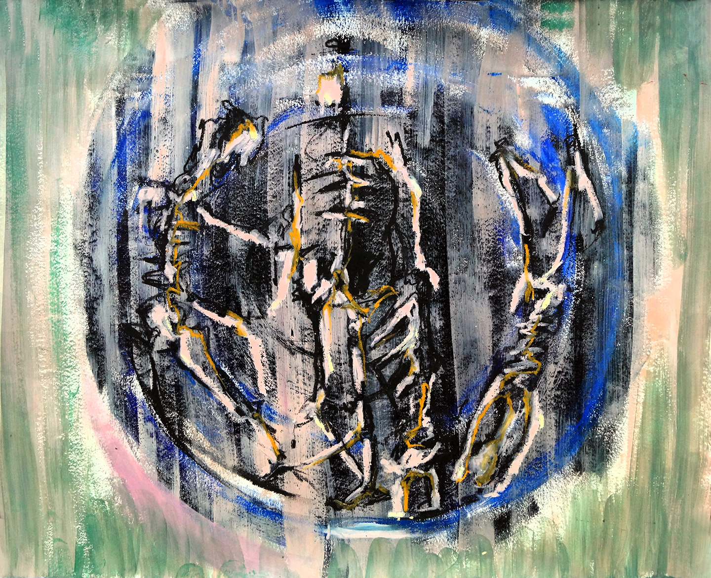
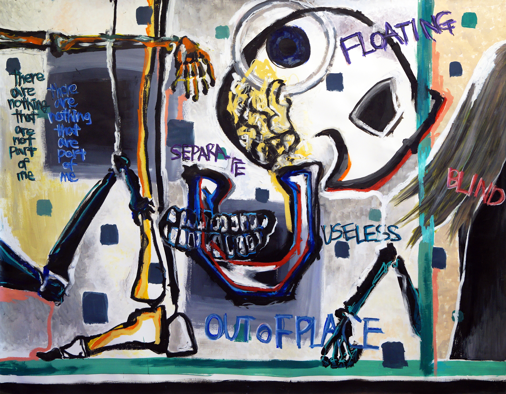
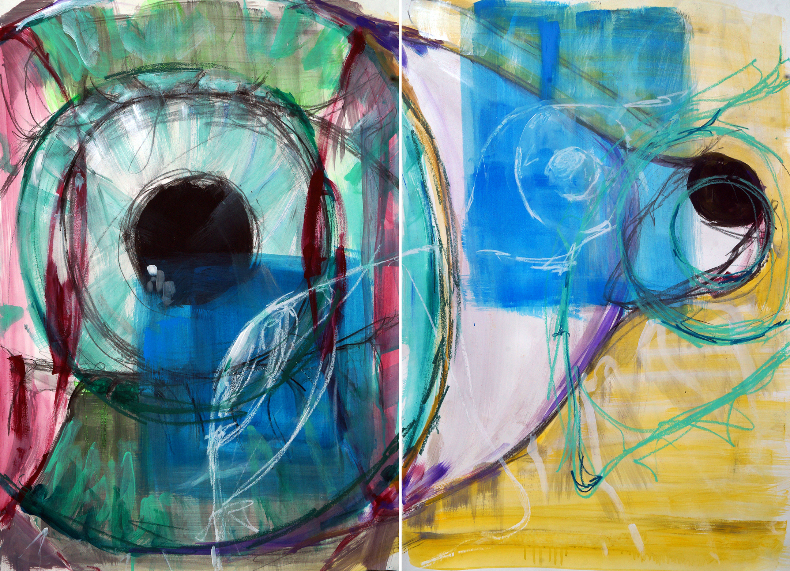
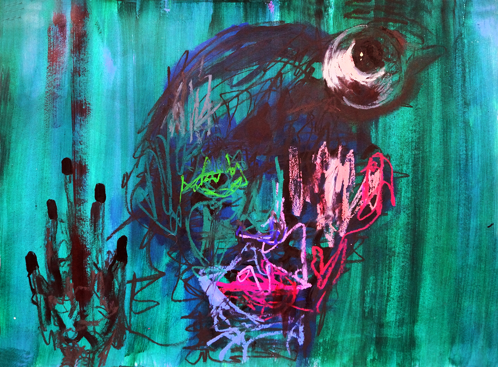
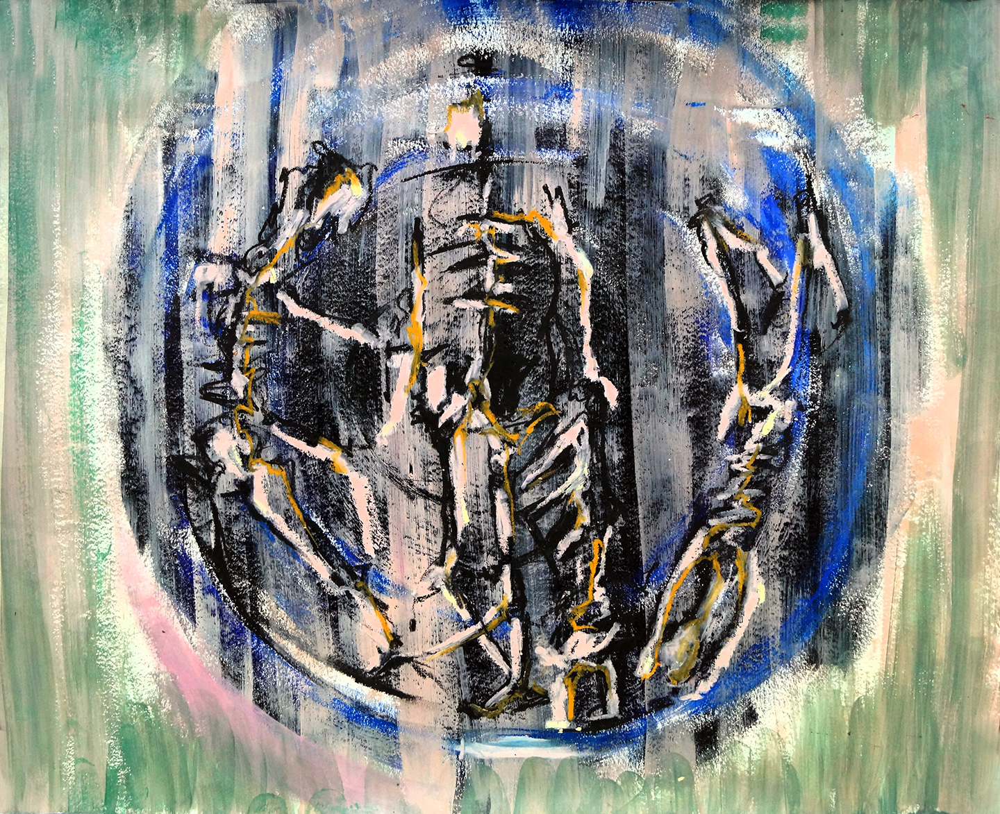
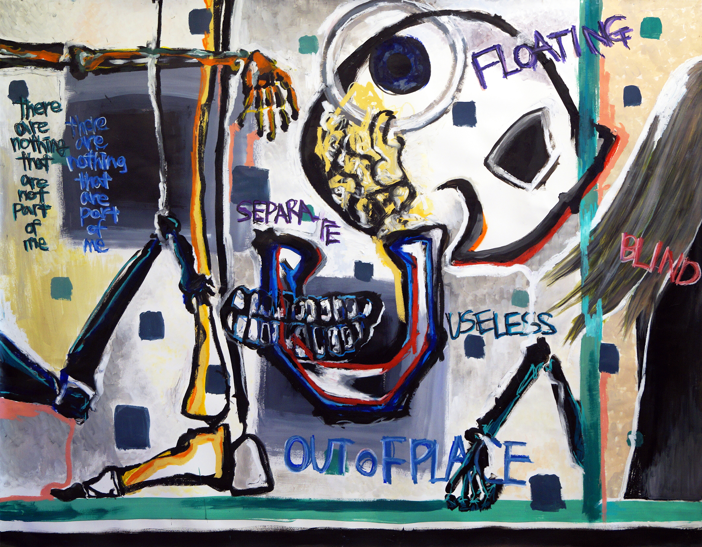

drawing

 

Painting

the stream of consciousness that detaches from current external tasks when attention drifts to a more personal and internal direction. This phenomenon is common in people's daily life shown by a large-scale study in which participants spend 47% of their waking time on average on daydreaming. There are various names of this phenomenon including mind wandering, fantasy, spontaneous thoughts, etc.


